Before spending a month on a browser extension or a small app, I want to see how many people search for it and what already answers them. This tool takes that search data — the words typed, how often, and what ranks for them — and draws it as a map. One star is one query. The bigger it is, the more people type it; the colour says how crowded that corner already is.
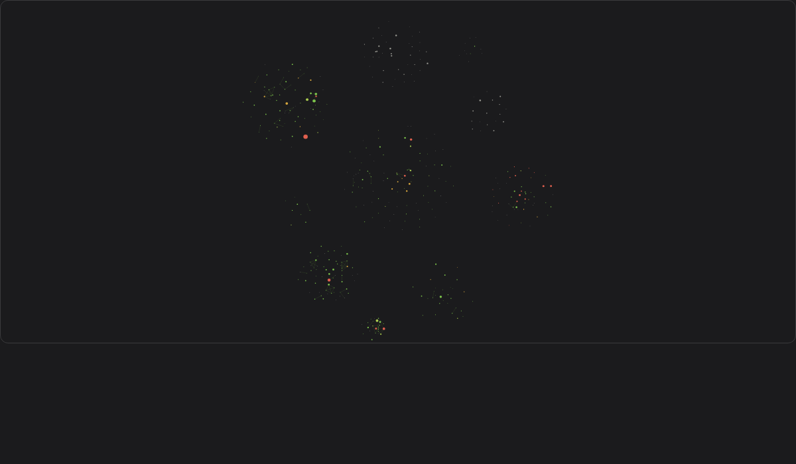
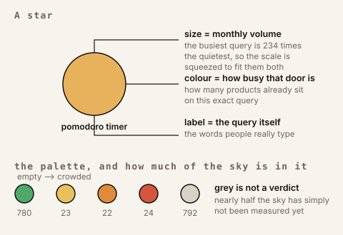
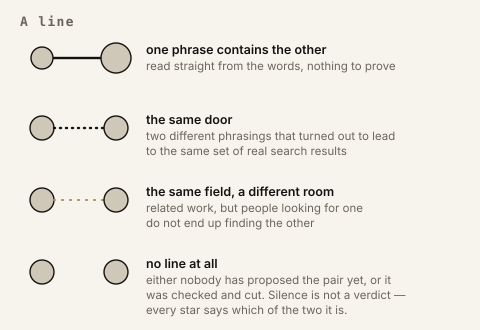
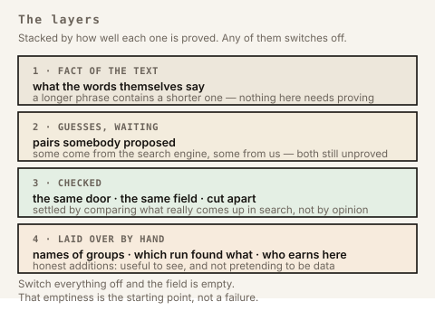
Positions are not decided by hand and not simulated in the browser. The layout is computed offline from the relations themselves, so a sky of a thousand-odd nodes stays smooth to fly through. Dragging a node is reading, not editing. A reset puts it back where the data says it belongs; the map is corrected through its data, never with the mouse.
The three numbers belong together. The instrument may only claim what it has measured, so what it has not reached yet is part of the reading.
Read the counts, not the density. The view fits itself to whatever it holds, so the sky looks emptier as it fills. Seven times more stars in the last frame than in the first, drawn seven times smaller. Two earlier frames stay unpublished: on those the method itself is legible.
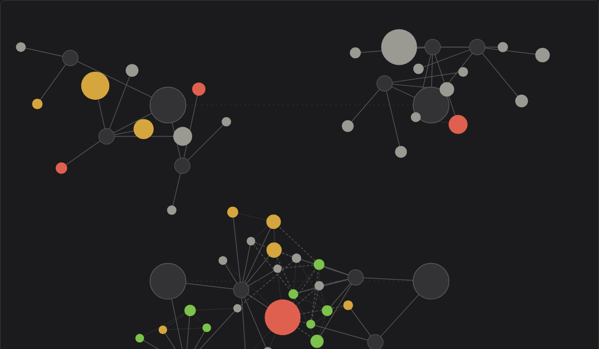
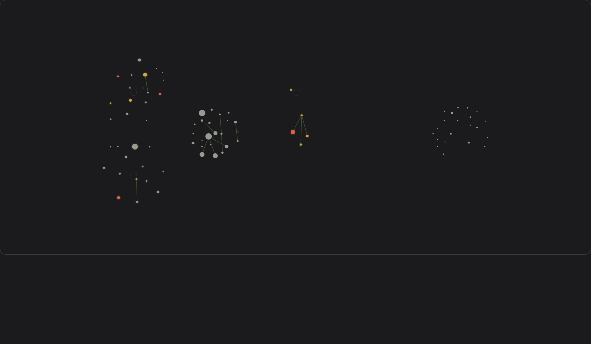
A run closed an idea instead of opening it: for “stop a child sending an intimate photo” there was no demand to be found. The silence was checked for being an instrument fault and was not one — the words exist, but only on the other side of that subject.
The last change to the engine so far. Two things went in: a check for queries that only look free — a million searches a month can belong to a site of the same name rather than to unclaimed demand — and a harvester that turns what passes the gates into rows of a register. Since then the instrument has not changed; it has been used.
The whole sky was measured in one pass rather than niche by niche: occupancy is now known for 664 of 1011 queries. That pass turned up a name with 1.22M searches a month that nobody had taken in the store.
A product counts as competing for a query only if it appears in the store's own top ten for it. Proven competitors and candidates stopped being kept in one list.
Occupancy is measured in the store's search, not in Google. Google shows who writes about a subject; the store shows who already sells there.
Domains that turn up in every result — the big forums and video sites — used to be excluded by a hand-written list. Now they are found from the data itself: anything appearing in more than a tenth of all results stops counting as a link between two queries.
The map began stating its own coverage: how many queries are on it, how many have been checked against real results, how many still wait. A claim exists only as a line in the dataset; a reading without its coverage is not a reading.
The map stopped being arranged by my questions. Each run of research had been pulling its own stars together, so the shape of the sky was the shape of what I had asked about. Now only relations between the words move anything, and the runs became a layer you can switch off — names floating over their stars like constellation names in an atlas.
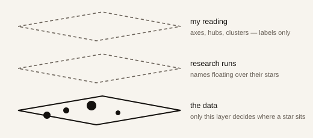
My own reading of the map — axes, hubs, clusters, bridges — moved into a layer of its own. It labels; it does not place. Nothing moves because I called a group a group.
Five attempts to compute “kinds of stars” failed one after another, and every one was caught by eye, not by a number. What survived is the single structure readable from the words themselves: a longer phrase hangs off the shorter one it is built from.
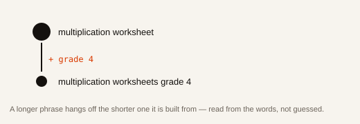
Google's list of related queries mixes two different things: longer versions of the same phrase, and genuine relatives. It does not separate them, so the map takes the first from the text and treats the remainder as the second. The raw list is never drawn.
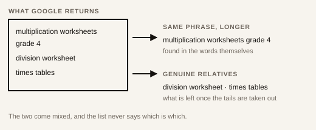
Two phrases count as the same demand only after their search results agree. A language model's guess is a candidate; the verdict comes from the page of results.
Star size is the fourth root of monthly searches. Drawn by area, the largest star came out 234 times the smallest; drawn by logarithm, everything at the top flattened out.
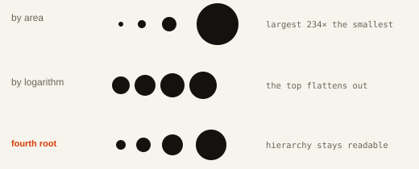
The haloes around groups were removed. An oval drawn around members swallowed stars belonging elsewhere — the picture claimed a neighbourhood the data did not have. Each member carries a ring now, and the name sits above them.
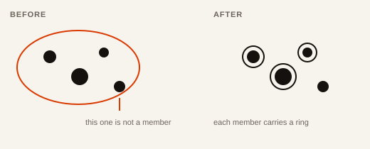
One sky instead of a map per subject. Separate maps could not be compared, and that threw away the most interesting thing — where two subjects touch.
The map left paper. Until then a subject was drawn by hand as a diagram; from here it is a graph you can fly through, built from a dataset written down first. Two choices made that day still hold: colour means how busy a door is, not how hard it is to rank for, and size means monthly volume.